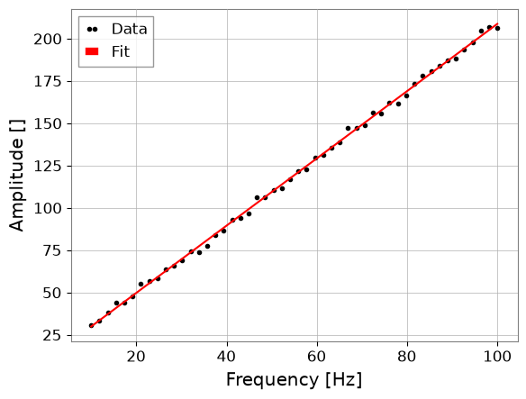
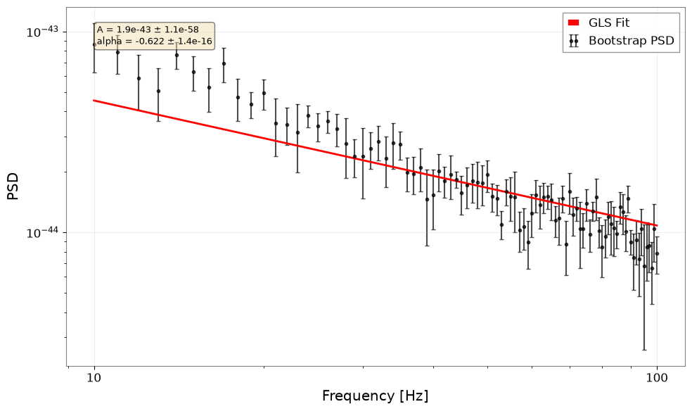

フィッティング: 基本#
目的: 通常最小二乗法（OLS）および一般化最小二乗法（GLS）を使用して GW データにモデルをフィットする方法を学びます。
GWexpy は主要な最適化エンジンとして iminuit を使用し、相関を持つスペクトルデータ用の特化したコスト関数を提供します。
このノートブックを実行する前に、fitting extra でインストールしてください: pip install "gwexpy[fitting]"。
1. 単純な OLS フィット#
対角誤差（OLS）を使った単純なべき乗則フィットから始めます。
import warnings
warnings.filterwarnings("ignore", category=UserWarning)
warnings.filterwarnings("ignore", category=DeprecationWarning)
import matplotlib.pyplot as plt
import numpy as np
np.random.seed(42)
from gwexpy.fitting import fit_series
# Generate synthetic data
freqs = np.linspace(10, 100, 50)
model = lambda f, a, b: a * f + b
y_true = model(freqs, 2.0, 10.0)
y_obs = y_true + np.random.normal(0, 2, size=len(freqs))
from gwexpy.frequencyseries import FrequencySeries
psd = FrequencySeries(y_obs, frequencies=freqs)
res = fit_series(psd, model, p0={"a": 1.0, "b": 1.0})
res.plot()
plt.show()
print(f"Fitted a={res.params['a']:.2f}, b={res.params['b']:.2f}")

Fitted a=1.99, b=10.26
2. 一般化最小二乗法（GLS）#
データ点が相関している場合（例：重なり窓を使った PSD 推定）、共分散行列 \(\Sigma\) を使用します。
from iminuit import Minuit
from gwexpy.fitting import GeneralizedLeastSquares
# Create a dummy covariance matrix
cov = np.eye(len(freqs)) * 4.0
cov_inv = np.linalg.inv(cov)
# 1. Define Cost Function
cost = GeneralizedLeastSquares(freqs, y_obs, cov_inv, model, cov=cov)
# 2. Initialize and Run Minuit
m = Minuit(cost, a=1.0, b=1.0)
m.migrad()
print(m.values)
<ValueView a=1.987114800112779 b=10.257738183268135>
3. 高レベル統合パイプライン#
実際の解析では、ブートストラップ法を使ってデータ自体から共分散行列を推定することが多いです。GWexpy はこのための統合パイプラインを提供しています。
from gwexpy.fitting.highlevel import fit_bootstrap_spectrum
from gwexpy.noise.wave import colored
# Generate 10 seconds of pink noise
data = colored(duration=10, sample_rate=256, exponent=0.5, amplitude=1e-21)
def power_law(f, A, alpha):
return A * f**alpha
result = fit_bootstrap_spectrum(
data,
model_fn=power_law,
freq_range=(10, 100),
fftlength=1.0,
overlap=0.5,
initial_params={"A": 1e-21, "alpha": -0.5},
plot=True
)

4. 演習#
パラメータ制約:
fit_seriesのlimits引数を使ってa > 0となるよう OLS フィットを修正してください。MCMC: セクション 3 で
run_mcmc=Trueを設定して MCMC を有効にしてください（emceeが必要）。
5. 検証セル（NBMAKE）#
assert "a" in res.params
assert result.reduced_chi2 > 0
print("Validation successful!")
Validation successful!